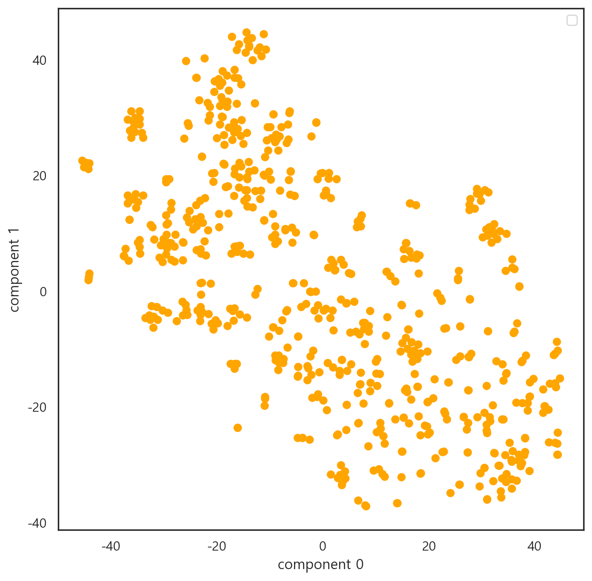
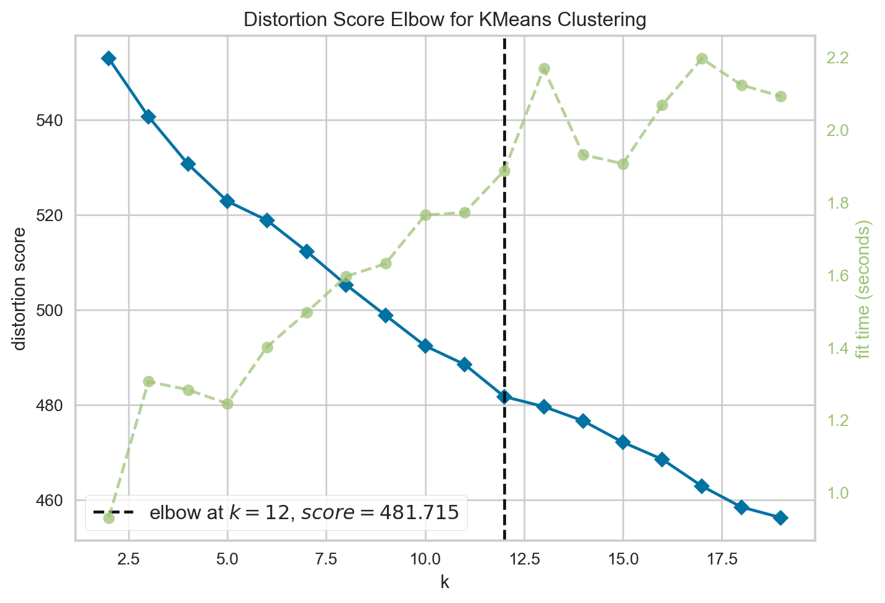
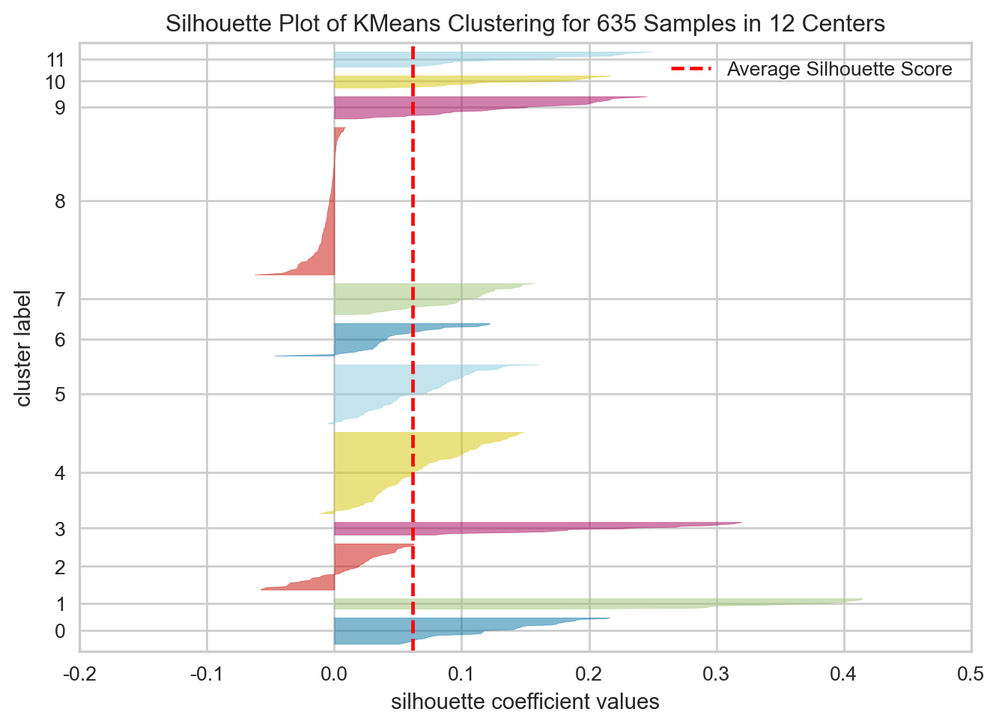

press = bkp.press_counter(news_df)
sns.barplot(data = press, x = "기사", y = "언론사")<AxesSubplot: xlabel='기사', ylabel='언론사'>
1. Clustering analysis을 중심으로
지난 2022년 7월 15일, 인하대학교 재학생 강간살인 사건의 언론 재현 수준을 분석한 보고서이다.
먼저 해당 사건 발생일 기준 3개월 간의 뉴스 기사 데이터를 수집하였다.해당 기간 이후의 기사는 대체적으로 본 사건과 관련이 없는 기사가 많았다. 이에, 총 3개월 치의 기사만 수집하였다.
기사는 빅카인즈(BigKinds)를 통해 수집하였다. 포털 사이트의 기사를 크롤링을 하는 방법도 있으나, 포털 뉴스 특성상 기사가 중복된 내용이거나 지나친 편향성을 지닌 기사가 많아, 본 분석에선 빅카인즈에서 데이터를 별도로 수집하는 방식을 선택했다.
또한 언론의 어젠다를 분석하는데 있어 주요 신문사들의 보도를 보는 것이 좋다고 판단하여 총 10개의 언론사(“세계일보”, “문화일보”, “경향신문”, “동아일보”, “한겨레”, “서울신문”,“한국일보”,“중앙일보”, “국민일보”,“조선일보”)의 기사를 선별하여 데이터를 수집했다.
본 내용은 전체 기사 중 주제를 중심으로 군집을 형성하는 과정을 진행한 내용이다. 깊게 존재하는 의미 연결망 분석 및 담론 분석은 이후 보고서에서 작성하기로 한다.
먼저 수집한 기사들의 언론사 구성 빈도는 다음과 같다.
press = bkp.press_counter(news_df)
sns.barplot(data = press, x = "기사", y = "언론사")<AxesSubplot: xlabel='기사', ylabel='언론사'>
해당 데이터 중 포토 기사는 내용적 측면에서 데이터 분석이 매우 어렵다. 이에 포토 기사는 본 분석에서 제외하기로 결정했다.
filt = news_df[news_df['제목'].str.contains('포토')].index
news_df.drop(filt, inplace=True)
news_df.reset_index(drop = True, inplace = True)키워드 빈도 분석을 진행하였다. 단어 전체의 키워드를 추출한 후, 이를 워드클라우드로 변환하여 분석하였다.
분석 결과는 다음과 같다.
wc = WordCloud(font_path = './data_analysis/NanumBarunGothic.ttf',
width = 500,
height = 500,
background_color='white').generate_from_frequencies(key_words.set_index('단어').to_dict()["빈도"])
plt.figure(figsize = (8, 8))
plt.imshow(wc)
plt.axis('off')
plt.show()
다음은 언론사 별 단어 빈도 분석 결과이다. 본 분석은 보수 언론(조선, 중앙, 동아)와 진보 언론(한겨례, 경향) 간의 차이를 확인하고자 진행하였다.
분석은 위의 절차와 동일한 방법으로 키워드 변환 이후 워드클라우드로 시각화했다.
분석 결과는 다음과 같다.
조선일보
bkp.press_keywords_wordcloud(news_df, '조선일보')
중앙일보
bkp.press_keywords_wordcloud(news_df, '중앙일보')
동아일보
bkp.press_keywords_wordcloud(news_df, '동아일보')
한겨례
bkp.press_keywords_wordcloud(news_df, '한겨레')
경향신문
bkp.press_keywords_wordcloud(news_df, '경향신문')
우선 문서 데이터의 분석을 원활히 하기 위해 DTM(Document Term Matrix)을 구축하였다.
DTM은 문서에서 키워드만 추출하여 list에 담은 뒤, Scikit-Learn의 CounterVCtorizer를 활용하여 word vector를 생성하였다. 그 후, TfidfTransformer를 통해 문서 내 단어 중요도를 반영하였다.
from sklearn.feature_extraction.text import CountVectorizer, TfidfTransformer
from sklearn.pipeline import Pipeline
text = news_df['키워드']
pipeline = Pipeline([
('vect', CountVectorizer()),
('tfidf', TfidfTransformer()),
])
vec = pipeline.fit_transform(text).toarray()DTM 생성 후, 모델에서의 분석 정확도 고려를 위해, Nomalizer로 스케일링을 진행하였다.
from sklearn.preprocessing import Normalizer
nor = Normalizer()
norvec = nor.fit_transform(vec)다음은 DTM을 t-SNE기법으로 차원을 축소하여 시각화한 형태이다.
전반적으로 문서가 흩어져 있는 양상을 보여, 군집 간의 밀집 정도 파악은 다소 어려워보인다. 아무래도 문서의 양이 절대적으로 적다보니, 문서 간 군집 형성 정도를 확인하기 어려운 부분이 있다.
from sklearn.manifold import TSNE
tsne = TSNE(n_components=2, learning_rate=400).fit_transform(norvec)
tsne_df = pd.DataFrame(tsne, columns = ['component 0', 'component 1'])
plt.scatter(tsne_df['component 0'], tsne_df['component 1'], color = 'orange')
plt.xlabel('component 0')
plt.ylabel('component 1')
plt.legend()
plt.show()No artists with labels found to put in legend. Note that artists whose label start with an underscore are ignored when legend() is called with no argument.
본격적으로 데이터 분석을 진행하고자 문서 군집화를 진행하였다.
방법의 경우, K-means Clustering으로 진행하였다. 문서의 양이 많지 않은 데다가 분포가 고르지 못한 경향이 있어, K-means Clustering이 이에 가장 적합한 분석 방법이라고 판단했다.
먼저, K-Means Clustering을 시행하기 위해 최적 군집 갯수를 유추하였다. Elbow method를 통해 분석을 진행하였으며, 이를 통해 최적 군집의 갯수는 12개로 유추하였다.
from sklearn.cluster import KMeans
from yellowbrick.cluster import KElbowVisualizer
vzr = KElbowVisualizer(KMeans(max_iter=1000, random_state=10), k=(2, 20))
vzr.fit(norvec)
vzr.poof()
<AxesSubplot: title={'center': 'Distortion Score Elbow for KMeans Clustering'}, xlabel='k', ylabel='distortion score'>최적 군집 갯수를 기점으로 실루엣 계수를 분석하였다.
실루엣 계수는 군집 간의 유사도를 수치적으로 확인하는 방법이다.
from yellowbrick.cluster import SilhouetteVisualizer
kmeans= KMeans(n_clusters=12, max_iter=1000, random_state=10) #최적 Topic 개수 12개를 기점으로 진행
visualizer = SilhouetteVisualizer(kmeans, colors='yellowbrick')
visualizer.fit(norvec)
visualizer.show()
<AxesSubplot: title={'center': 'Silhouette Plot of KMeans Clustering for 635 Samples in 12 Centers'}, xlabel='silhouette coefficient values', ylabel='cluster label'>전반적으로 계수가 높지 않았다. 다만, 텍스트 데이터 특성상 실루엣 계수가 낮아도 의미적으로는 문제가 없는 경우가 다소 있어,’ k 값은 elbow method의 결과인 12로 진행하기로 결정하였다.
군집 별 기사 갯수는 다음과 같다.
labels = kmeans.labels_
topic_df = news_df[['언론사', '제목', '키워드']]
topic_df['군집'] = labels
topic_df.groupby('군집').size()군집
0 34
1 14
2 59
3 17
4 103
5 75
6 42
7 40
8 186
9 29
10 16
11 20
dtype: int64군집 내 기사들의 내용을 분석한 결과, 다음과 같이 클러스터링이 진행됐다.
topic_df.loc[topic_df['군집']==0, '군집'] = '경제'
topic_df.loc[topic_df['군집']==1, '군집'] = '리멤버 0715'
topic_df.loc[topic_df['군집']==2, '군집'] = '인하대 사건 그 이후'
topic_df.loc[topic_df['군집']==3, '군집'] = '인하대 입시'
topic_df.loc[topic_df['군집']==4, '군집'] = '인하대 사건 조사보도'
topic_df.loc[topic_df['군집']==5, '군집'] = '가해자 재판'
topic_df.loc[topic_df['군집']==6, '군집'] = '젠더 이슈'
topic_df.loc[topic_df['군집']==7, '군집'] = '가해자 체포'
topic_df.loc[topic_df['군집']==8, '군집'] = '관련 없는 기사'
topic_df.loc[topic_df['군집']==9, '군집'] = '학교 측 가해자 징계'
topic_df.loc[topic_df['군집']==10, '군집'] = '인하대 총장'
topic_df.loc[topic_df['군집']==11, '군집'] = '부고'다음 결과 중 본 사건과 관련 없는 기사는 별도로 필터링한 상태로, 데이터를 추출하였다.
해당 데이터를 통해 의미 연결망 분석을 진행하였으며, 해당 내용은 “2. 의미연결망 분석을 중심으로” 편에서 다루기로 한다.
filter_list = ['경제', '인하대 입시', '관련 없는 기사', '인하대 총장', '부고']
inha_df = topic_df[~topic_df['군집'].isin(filter_list)]
inha_df.reset_index(drop = True, inplace = True)